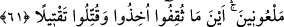
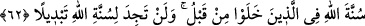
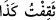

61. Hepsi de lânetlenmiş olarak nerede ele geçirilirlerse, yakalanır ve mutlaka
öldürülürler.
“Hepsi de lânetlenmiş” oldukları halde senin yanında kalabilir/sana komşu
olabilirler. Allâh’ın rahmetinden ya da Medîne’den kovulmuş “olarak nerede ele
geçirilirlerse,” hangi yerde bulunurlarsa “yakalanır” tutulurlar; yâni onları
yakalamaları gerekir “ve mutlaka öldürülürler” yâni, alçaklık ve horlukla öldürülecek
olanı öldürsünler. Yâni onlar hakkındaki hüküm Allâh’ın her iki emrine uygun olarak
yakalanmaları ve öldürülmeleridir. Onlar yakalanma ve öldürülme hükmünü duyunca
yaptıklarına son verdiler. Nitekim Ebü’l-Leys Tefsîri’nde böyle geçmektedir.
Râğıb şöyle demiştir: “, bir şeyi idrak edip anlamakta ve yapmakta mahâret
sâhibi olmaktır. Bakmaktaki mahâret sebebiyle bir şeyi gözünle idrâk ettiğin zaman “ denir. Sonra bir maharet olmasa da bir şeye ulaşıp elde etme konusunda
mecâzen bu kelime kullanılmıştır.
Muhammed b. Sîrîn ise onlar bu kötülüklerinden vazgeçmediklerini, Allah Teâlâ’nın
Hz. Peygamber (s.a.)’i onlara musallat etmediğini söylemiştir. Tehdîd (vaîd) konusunda
cezâdan vazgeçip affetmek câizdir. Bu sözünden caymaya dâhil değildir. Nitekim
Keşfü’l-esrâr’da böyle geçmektedir.
62. Allâh’ın önceden geçenler hakkındaki kanunu budur. Allâh’ın kanununda asla
bir değişiklik bulamazsın.
“Allâh’ın önceden geçenler hakkındaki kanunu budur.” Yâni Allah Teâlâ hikmet
cihetinden bunu geçmiş ümmetlerde bir sünnet/kanun ve tâkip edilen bir yol alarak
belirlemiştir. Bu da peygamberlere iki yüzlülük/münâfıklık yapanların, yalan haber
yayma ve benzerleri ile onların işlerini zayıflatmaya çalışanların nerede bulunurlarsa
bulunsunlar öldürülmeleridir.
“Allâh’ın kanununda asla bir değişiklik bulamazsın.” Sünnetullah, teşrî/şer‘î
hükümler koymanın da yörüngesi olan hikmet esâsına dayandığı için Allah onu
değiştirmez ya da kimse onu değiştirmeye güç yetiremez.
Onu değiştirmeye kimsenin gücü yetmez. Teşri ve yasama bu hikmetin yörüngesi
esasına göre deverân edip binâ edildiği için Allah Teâlâ onu değiştirmez. Çünkü
sünnetullah mutlaka yerine getirilecektir.
Âyette münâfıklar doğrudan tehdid edilmektedir. İşâret yoluyla da onların yerinde
olan mutasavvıf ve mütearriflerden (zorla sûfî ve ma‘rifet ehli görünmeye çalışan) taleb
ehlinin münâfıkları tehdid edilmektedir. Onlar görünüşte/zâhirde sûfîlerin elbisesini